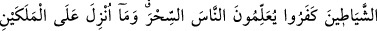

SİHİR İLMİ -
HÂRUT VE MÂRUT
102.
Süleymân’ın
hükümranlığı
hakkında
onlar,
şeytanların
uydurup
söylediklerine tâbi oldular. Halbuki Süleymân büyü yapıp kâfir olmadı. Lâkin
şeytanlar kâfir oldular. Çünkü insanlara sihri ve Bâbil’de Hârût ile Mârût isimli iki
meleğe indirileni öğretiyorlardı. Halbuki o iki melek herkese: Biz ancak imtihan
için gönderildik, sakın yanlış inanıp da kâfir olmayasınız, demeden hiç kimseye
(sihir ilmini) öğretmezlerdi. Onlar, o iki melekden, karı ile koca arasını açacak
şeyleri öğreniyorlardı. Oysa büyücüler, Allah’ın izni olmadan hiç kimseye zarar
veremezler. Onlar, kendilerine fayda vereni değil de zarar vereni öğrenirler. Sihri
satın alanların (ona inanıp para verenlerin) âhıretten nasîbi olmadığını çok iyi
bilmektedirler. Karşılığında kendilerini sattıkları şey ne kötüdür! Keşke bunu
anlasalardı!
103. Eğer îmân edip kendilerini kötülükten korusalardı, şüphesiz, Allah
tarafından verilecek sevâb daha hayırlı olacaktı. Keşke bunları anlasalardı!
Yahûdîler, Süleymân’ın hükümdarlığı hakkında, şeytanların uydurdukları sözlere
uydular; Allah’ın kitaplarını arkalarına attılar da şeytanların okudukları ve amel
ettikleri sihir kitaplarına uydular. Bu cinler, inkârı alışkanlık hâline getirdiler.
Şeytanlara uymaktan murâd, o işle meşgul olmak ve samîmî olarak onunla ilgilenmek
ve onu tamamıyla kabûl etmektir.
Süddî demiştir ki: “Şeytanlar gökyüzüne tırmanıyor, meleklerin dünyâda ölüm ve
başka şeylerle ilgili konularda söylediği şeyleri dinliyorlar ve dünyaya dönünce her